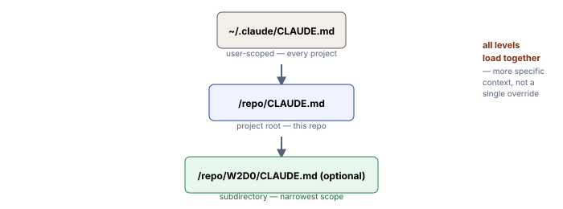

Concept: Why CLAUDE.md Matters
The Big Picture
What it is. CLAUDE.md is your project's persistent instruction manual for Claude Code. It's a plain markdown file that Claude reads at the start of every session to understand:
- How you work (your coding style, testing requirements, deployment process)
- What constraints matter (security policies, performance thresholds, compliance rules)
- Where to find things (how your data is organized, which tools do what)
- What you've already learned and built (ongoing context that survives across sessions)
Why This Matters
Without CLAUDE.md, every session starts with Claude knowing only what's in your git history and file tree. With it, Claude knows your team's unwritten conventions — the "why" behind your architecture choices, the gotchas you've learned, what you're building toward. This turns Claude Code from a generic tool into something that understands YOUR project.
Three Levels of CLAUDE.md (Hierarchical Context)
CLAUDE.md comes in three flavors that all combine into context — but they don't all load at the same moment:
- User-level (
~/.claude/CLAUDE.md) — Personal instructions that apply to EVERY project you open. Example: "always write test cases before implementation," "commit messages must follow Conventional Commits," "only use Poetry for package management, never pip." Loaded in full at session launch. - Project-level (
PROJECT_ROOT/CLAUDE.md, or equivalentlyPROJECT_ROOT/.claude/CLAUDE.md) — This project's specific rules. Example: "we use FastAPI for backends, Redux for state management, SQLAlchemy for ORM." This is what you've been extending all week. Also loaded in full at session launch. - Subdirectory-level (
src/backends/CLAUDE.md) — Sub-team rules. Example: "the billing module uses a special auditing pattern; always pair changes with audit log entries." This is real and supported for monorepos, but it does not load at launch alongside the other two — Claude Code discovers it lazily and pulls it into context only when Claude actually reads a file inside that subdirectory.
Key point: They combine, they don't override. If your user-level CLAUDE.md says "always write tests" AND your project CLAUDE.md says "unit tests must use pytest," both apply — Claude sees both constraints simultaneously (the project one loads after the user one, so more specific context is read last). Subdirectory rules join the mix once Claude touches that part of the tree. More specific rules don't replace general ones; they layer on top. (There's also an org-wide "managed policy" CLAUDE.md that IT/DevOps can deploy outside the project entirely — out of scope for this lesson, but good to know it exists.)

The .claude Folder Structure
CLAUDE.md is just one part of a larger ecosystem. The .claude/ folder holds everything else:
.claude/
├── CLAUDE.md ← This file: plain text instructions, no structure
├── settings.json ← Committed, shared config (hooks, permissions, tools)
├── settings.local.json ← Your personal overrides (in .gitignore)
├── commands/ ← Custom slash commands (e.g., /deploy, /test)
├── agents/ ← Custom subagent definitions
└── (hooks live inside settings.json's "hooks" key, not their own folder —
the scripts they call can be stored anywhere, e.g. .claude/hooks/*.sh)CLAUDE.md is freeform markdown — no schema, no parsing rules. Everything else is JSON-structured and processed by Claude Code. Think of CLAUDE.md as "tell me in words," and the rest as "configure these mechanisms."
Real-World Use Cases
1. Enforcing Code Style Across a Distributed Team
The problem: Your team has 5 engineers. Without documentation, one writes camelCase, another writes snake_case. Code reviews become style debates instead of logic reviews.
The solution: Your project's CLAUDE.md contains:
## Code Style
- All Python functions use snake_case. All variables use snake_case.
- All TypeScript uses PascalCase for classes, camelCase for variables and methods.
- Every function needs a one-line docstring explaining the "why" (not the "what").
- Imports are always at the top: stdlib, then third-party, then local, each group sorted alphabetically.The result: When Claude writes code, it automatically follows these rules. When it reviews your code, it checks against them. No more "but the style guide says..." arguments — Claude enforces it.
2. Capturing Lessons From Outages
The problem: Your team deployed a change that didn't handle concurrent updates correctly. You spent 4 hours tracking it down. Next month, a new engineer makes a similar mistake.
The solution: Your CLAUDE.md includes:
## Known Footguns
- When updating user permissions, ALWAYS use a database transaction with row-level locking.
We learned this the hard way on 2025-03-14 when two concurrent API calls left a user without
any role. The fix: always fetch, lock, update in a transaction.
- Never cache user roles in memory without a 5-minute TTL. Stale role data has caused false
permission denials in production.The result: Claude remembers these lessons and warns you when similar patterns appear in your code.
3. Keeping Architectural Decisions Alive Across Seasons
The problem: Your project chose PostgreSQL, not MongoDB. This was decided in 2023, documented in a dead GitHub issue, and forgotten. In 2025, a new feature request arrives, and someone asks "why don't we just use MongoDB?"
The solution: Your CLAUDE.md has a section:
## Architectural Decisions
- **Database**: PostgreSQL, not MongoDB. Why: we need ACID transactions, complex joins, and
relational integrity for billing. We avoid NoSQL for this domain.
- **Frontend framework**: React (not Vue), because the team has deep expertise and most
third-party integrations target React.The result: Every proposal Claude makes fits this architecture. Suggestions stay coherent across years and team rotations.
4. Documenting Data Schemas and Lookup Paths
The problem: Your project has several databases and a custom data format. Claude keeps guessing where data lives and what fields exist.
The solution: Your CLAUDE.md documents the schema once:
## Data Locations and Access Patterns
- **Insurance claims** live in `data/insurance/claims.db` (SQLite, schema in `data/_DATA_README.md`)
- **Policy documents** live in `data/insurance/policies/` as plaintext, keyed by policy_id
- **Customer emails** live in `data/insurance/fnol_emails.csv` with columns: [email_id, policy_id, subject, body, timestamp]
- Use the `ClaimLookup` tool to query claims; use the `PolicyReader` tool to fetch policy text.
Don't try to parse policies with regex — they have complex structure.The result: Claude doesn't guess. It knows exactly where to look and how to fetch it.
5. Defining Approval Gates for Sensitive Actions
The problem: You want Claude to help with database migrations, but not to auto-deploy them. You want it to suggest payment refunds, but not to send them without your sign-off.
The solution: Your CLAUDE.md includes:
## Approval Requirements
- Database schema changes require human review before execution. Claude must propose,
not execute.
- Refunds over $100 require explicit user approval. Never auto-approve.
- Deleting user data requires confirmation—no batch deletes without human sign-off.
- Pushing to main requires at least one team member to review the PR first.The result: Claude is helpful but bounded. It knows when to stop and ask for permission.
Hands-on Practice: Five Examples
Example 1: Read the Project's CLAUDE.md
Claude Code chat panel, in this repoRead the project's CLAUDE.md file. Summarize in 3-4 bullets what you now know
about this project that you wouldn't know from just browsing the file tree and
git history. Focus on the constraints, patterns, and design decisions that
matter for building here.What's happening: Claude loads CLAUDE.md automatically and reads it on your command. You get back a summary of the project's unique context — the stuff that's too important to leave to chance.
Example 2: Create a User-Level CLAUDE.md (If You Don't Have One)
Terminal/PowerShellStep 1: Check whether a user-level CLAUDE.md already exists on your machine:
# On Mac/Linux
ls -la ~/.claude/CLAUDE.md 2>&1 || echo "no user-level CLAUDE.md yet"
# On Windows (PowerShell)
Test-Path $env:USERPROFILE\.claude\CLAUDE.md -PathType Leaf; if ($?) { cat $env:USERPROFILE\.claude\CLAUDE.md } else { Write-Host "no user-level CLAUDE.md yet" }Step 2: If it doesn't exist, create one with your personal rules. In Claude Code, run:
Create a user-level CLAUDE.md for me at ~/.claude/CLAUDE.md with these sections:
## My Coding Preferences
- Always write a plan before editing multiple files
- Prefer explicit code over clever one-liners
- Use descriptive variable names (no single letters except loop indices)
## My Testing Standards
- Every public function needs at least one test case
- Never commit without running the test suite
## My Documentation Habits
- Commit messages should explain the "why", not the "what"
- Code comments are only for non-obvious logicStep 3: After Claude creates it, verify it exists:
# On Mac/Linux
cat ~/.claude/CLAUDE.md
# On Windows (PowerShell)
Get-Content $env:USERPROFILE\.claude\CLAUDE.mdExample 3: Observe Layering in Action
Claude Code chat panel, in this repoList every source of CLAUDE.md context you currently have loaded for this session.
For each one, tell me:
1. Its file path on disk (e.g., ~/.claude/CLAUDE.md or ./CLAUDE.md)
2. Whether it's user-level, project-level, or subdirectory-level
3. One key instruction from it
Don't ask me which ones exist—just tell me what you've actually loaded.What's happening: Claude scans multiple directories and reports exactly which CLAUDE.md files are active. This reveals the layering in real time.
Example 4: Add a Project-Specific Rule
Terminal/PowerShell, in this repo rootStep 1: Open the project's CLAUDE.md:
# On Mac/Linux
open CLAUDE.md
# On Windows
notepad .\CLAUDE.mdStep 2: Scroll to the end and add a new section. For example, if you're working on an API project, add:
## API Response Standards
- All API endpoints must return consistent error responses with {error: string, status: number}
- All date/time fields use ISO 8601 format (e.g., 2025-03-15T14:30:00Z)
- Endpoints that modify data must return a 202 (Accepted) while processing, or 201 (Created) on success
- Always document query parameters in comments: ?page=1&limit=100 (defaults: page=1, limit=20)Step 3: Save and close the file. Now, in Claude Code, write some API code:
Create a Python FastAPI endpoint POST /claims that accepts a claim object,
saves it, and returns the response. Follow the API Response Standards in CLAUDE.md.What's happening: Claude reads your new CLAUDE.md section and applies those rules to the generated code. You get a response that respects your team's API conventions automatically.
Example 5: Use CLAUDE.md to Override a Claude Code Assumption
Claude Code chat panelSetup: Suppose your project uses an unusual pattern — maybe you prefer environment-based configuration over dotenv files, or you use a custom logger instead of print().
Step 1: Add this to your project CLAUDE.md:
## Configuration Management
- Never use python-dotenv (.env files). Configuration comes from environment variables
only, read via os.environ['KEY'] with fallback to /etc/config/app.json.
- Never use print() for logging. Always use the project's Logger class:
from logging_config import Logger; logger = Logger(__name__)Step 2: Now ask Claude to write initialization code:
Create a Python script that initializes the application: load configuration,
set up logging, and print "App started successfully" when done.What's happening: Without CLAUDE.md, Claude might suggest dotenv. With your rules, it reads from environment variables and uses your Logger class instead — even though you never mentioned your Logger class in this prompt. CLAUDE.md is doing the heavy lifting.